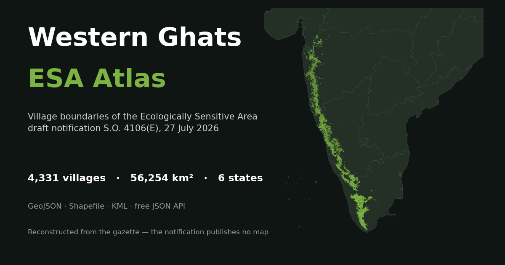

Interactive atlas & open data
Every village named in the draft Western Ghats Ecologically Sensitive Area notification, mapped. 4,331 of 4,402 rows have a boundary, and the map can shade by 15 indicators. Any selection exports as a PDF, and the full dataset downloads as GeoJSON, Shapefile, KML or CSV, with a free JSON API.
Figures current as of the v3.11 build, 20 September 2026.

An interactive map and open dataset of every village named in India's draft Ecologically Sensitive Area notification for the Western Ghats.
The notification — currently S.O. 4106(E) of 27 July 2026 — lists 4,402 villages across Goa, Gujarat, Karnataka, Kerala, Maharashtra and Tamil Nadu and proposes restrictions over 56,825.7 km². It names the villages in a table. It publishes no map.
I reconstructed one. 4,331 of the 4,402 rows (98.4%) now have a mapped boundary, each carrying its 2011 Census and LGD code, together covering 56,254 km² across 47 districts and 154 talukas.
On the site you can search a village by its gazette or census name, filter down to a state, district or taluka, and open any village to see how it was matched and what it holds. The map shades by any of fifteen indicators and overlays protected areas, tiger reserves, corridors and recorded forest. Any selection — one village or all six states — exports as a PDF with its map and statistics. The whole dataset downloads as GeoJSON, Shapefile, KML or CSV, and there is a free JSON API with no key and no rate limit.
A draft notification restricting land use across 56,825.7 km² and naming 4,402 villages was circulated with no spatial data at all. No map, no shapefile, no boundary list — just names in a 257-page PDF annexure.
I found that hard to accept. A resident cannot tell from a list of names whether their land is inside. A panchayat cannot see where the line runs. The six states have been objecting to the extent for over a decade, and every round of that argument has been conducted without a public map to argue about.
What made it worth doing rather than just complaining about: the boundaries were recoverable. The gazette names villages, and census village boundaries exist as open data. Nobody had put the two together.
The derived analysis followed from the same instinct. Once the extent existed, the obvious questions could be answered for the first time — how much of the proposed area is already protected, how much is already recorded forest and so already under state control, how many people live inside, and which villages hold the most forest under the least development pressure.
I am explicit on the site that this is an independent reconstruction with no legal standing, and that it must not be used to decide whether a specific parcel falls inside the ESA. Being useful and being authoritative are different things, and conflating them would have been the easy mistake.
Reading the gazette. I read the village names and boundary coordinates straight from the notification's text layer with PyMuPDF, so every name is taken exactly as printed rather than recognised from an image. The parser handles fixed column positions, rows wrapping onto two lines with the serial number centred between them, state banners appearing mid-page, and two side-by-side coordinate tables per page. Two checks confirm nothing was dropped: all six state serial runs reconcile exactly to 4,402, and all 402 coordinate pairs are accounted for — the one I excluded is a typo in the gazette itself, a Karnataka point that plots in Punjab.
Matching names to boundaries. Each gazette village is matched to the all-India census village layer hierarchically — district-and-taluka, then district, then state-wide — under a strict 1:1 constraint so no polygon is ever used twice. Three decisions did the real work. Each census village offers three romanised spellings as aliases. Both sides are also compared under a transliteration folding (oo→u, ee→i, doubled consonants collapsed), without which Marayur against Marayoor scores only 80 and is rejected. And thresholds scale with how far the search had to widen, because a taluka holding twelve villages can afford a looser bar than a state holding forty thousand.
Then a geographic gate, which is the part I would keep if I could keep only one. A name can match perfectly in the wrong place: a Gujarat village scored 100 against a namesake 295 km away in Saurashtra. Any wider-scope match landing more than 50 km outside its state's ESA core is rejected and retried. It caught thirty outliers.
Verifying it three ways, deliberately chosen not to share a failure mode:
1. Against the gazette's own 401 boundary coordinates — median distance from the reconstructed edge is 101 m in Goa and under 550 m in every state.
2. Against Kerala's independently published ESA — 98.1% of that official area falls inside my polygons, with the residue spread across slivers rather than any missing region.
3. Against the areas the notification states per state — 56,254 km² reconstructed against 56,825.7 notified, a ratio of 0.99.
The analysis layer. Areas are measured in EPSG:7755, an equal-area projection for India, never in degrees. Every source layer is unioned before measurement, because several self-overlap — recorded forest hit 154% of a single village before I caught that. Two composite scores rank each village by percentile, one for conservation value and one for human pressure, built so the two axes share no variable.
I ran an independent methodology audit against the whole pipeline, twice, and acted on every finding. It caught real errors: a figure that subtracted overlapping sets arithmetically and was wrong by 2,019 km², a highway total inflated 6.3% by undissolved duplicate segments, and a score component that was zero for 78% of villages and so behaved as a flag rather than a gradient. All three are fixed and the corrections are documented publicly rather than quietly patched.
The stack is deliberately plain — Python with GeoPandas, Shapely and rasterio for the pipeline; MapLibre GL JS and vanilla JavaScript for the site. No framework, no build step, no backend. It is static files on GitHub Pages, which is exactly what lets the API be free and keyless: it is just JSON at addressable paths.
The reconstruction rests on the MoEFCC gazette notification and the all-India census village boundary layer. The analysis adds the 2011 Primary Census Abstract for population; India-WRIS for protected areas and tiger reserves; Parivesh/Bharatmaps for eco-sensitive zones, wildlife corridors and Recorded Forest Area; NRSC land-cover and wasteland rasters; Forest Survey of India administrative units; India-WRIS basins and watersheds; and MoRTH highways via PM GatiShakti. Kerala's own published ESA is used as independent verification. The basemap is OpenStreetMap via OpenMapTiles.
Several layers came through India Geodata, a consolidated repository of India's openly-licensed geospatial data, CC BY 4.0.
The atlas is CC BY 4.0 — free to use with attribution and a link back. The underlying government datasets keep their own terms, and where a figure rests on a single dataset I ask people to cite that dataset rather than my site. Full citations and every licence are on the Method & caveats page.
I publish the limitations as prominently as the results. Bifurcated and Kerala villages are whole-village polygons standing in for partial extents, so population is an upper bound and every percentage-of-area figure is an under-estimate. The protected-area layer is a government portal's republication and stops at 2021. Land cover is mapped at 1:250,000 and is unreliable below about 25 km². Land outside Recorded Forest Area is not private land, and I say so in four places because it is the figure most likely to be misquoted.
Evaluating the selection, not just mapping it. Everything so far describes the villages that were chosen. The question I actually want to answer is whether the selection is well founded — and that needs the villages that were not. There are 18,469 of them in the same 202 subdistricts: same administration, same terrain, differing only in whether the gazette named them. That comparison would show how many high-forest villages were left out and how many low-forest, high-pressure ones were pulled in.
Comparing the Gadgil and Kasturirangan reports in geometry rather than prose. The two are endlessly compared in words and almost never spatially. Volume II of the Kasturirangan report carries its own village list, so a 2013-against-2026 diff is possible now; a full comparison also needs the Gadgil panel's zone grid, which has never been published machine-readably.
An Open Natural Ecosystems layer. Roughly 11,600 km² inside the proposed ESA — about a fifth of it — is officially classed as "wasteland": scrub, degraded forest, degraded pasture. Much of that is savanna and montane grassland, which are ecosystems in their own right rather than degraded anything. Showing the same ground under both framings would make that argument visible instead of abstract.
I am also working this up as a research paper on the selection question.
Open questions I would welcome help with: whether the 71 unmatched gazette rows can be resolved against state revenue records; whether any state has published physical-verification maps for bifurcated villages, which are the largest single source of over-statement; and whether a biodiversity layer can be joined at village level, which would let the conservation score measure something ecological rather than forest cover and tenure.
Corrections are the most useful thing anyone can send me. If you know a village mapped wrongly, or one I missed, that is worth more than any feature request — every check so far has found something real. The repository is open, or reach me through this site.